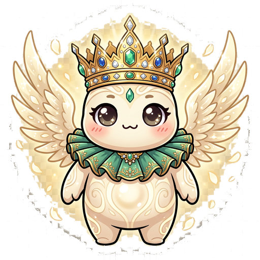
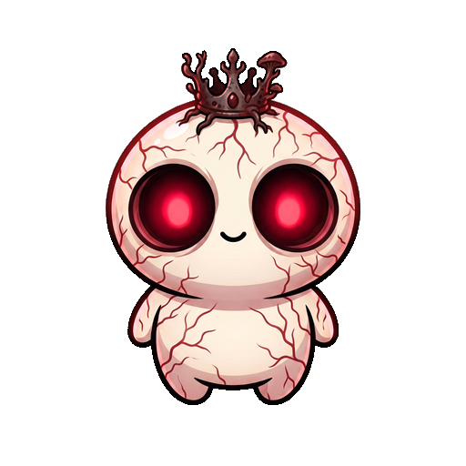
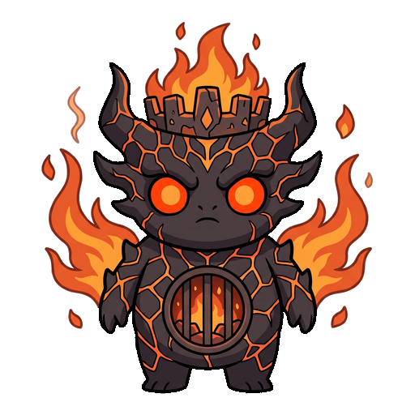
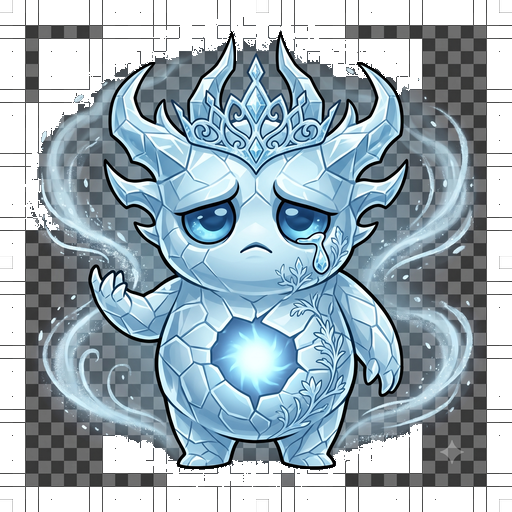
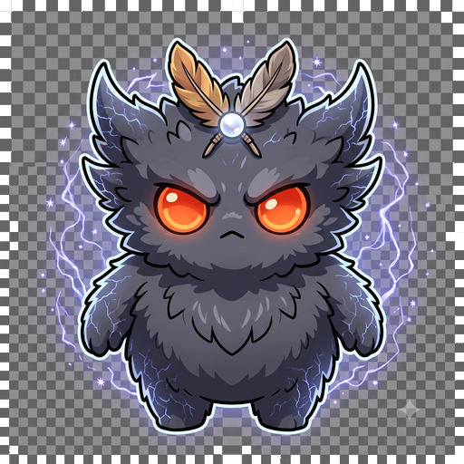
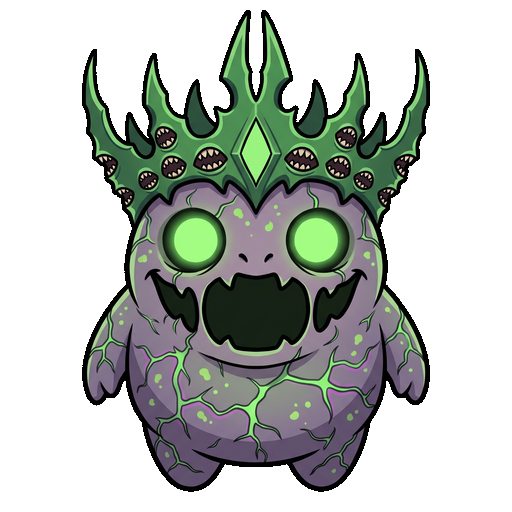

Raise it kind, and it stays kind. Neglect it — or feed it the wrong crown — and it becomes something else entirely.
เกมเลี้ยงมอนสเตอร์บนเดสก์ท็อป — เลี้ยงดีได้ร่างสดใส เลี้ยงแบบไหนก็ได้อีกร่างที่ต่างออกไป กำลังพัฒนาลง Steam
How you raise it decides which one wakes up.
Bright, warm, and loyal — the gentle path.

Neglect or a stolen crown awakens the corrupted side — "the Sleepless."
Every element twists differently once a crown takes hold.

Fire & ruin

Frost & silence

Storm & lightning

Chaos & hunger
Blood & the void
A crownling lives on your real desktop and grows the more you actually use your PC.
It branches down a bright or corrupted path based on how you treat it.
Pair two bloodlines and pass down a random mix of their skills.
Send your bloodline into async PvP — no need to be online at the same time.